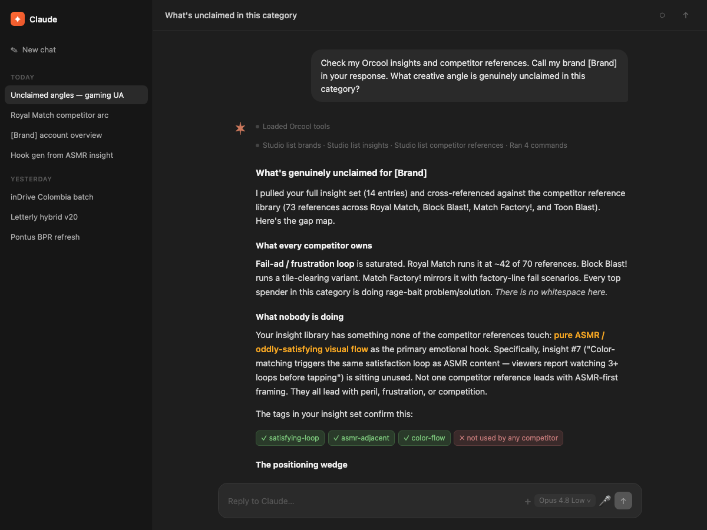
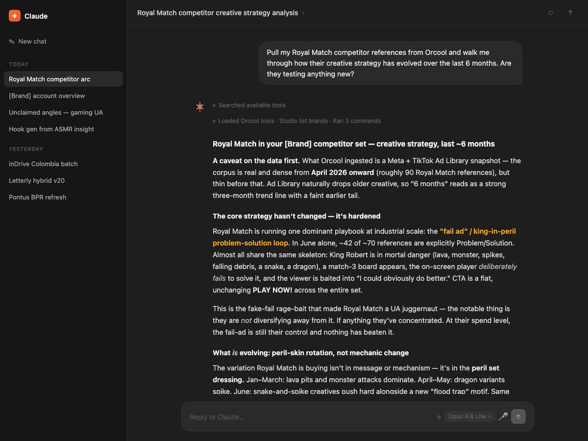
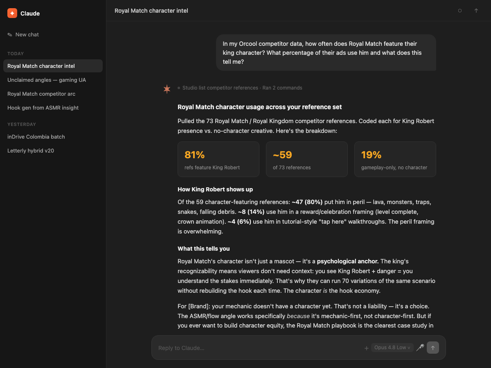
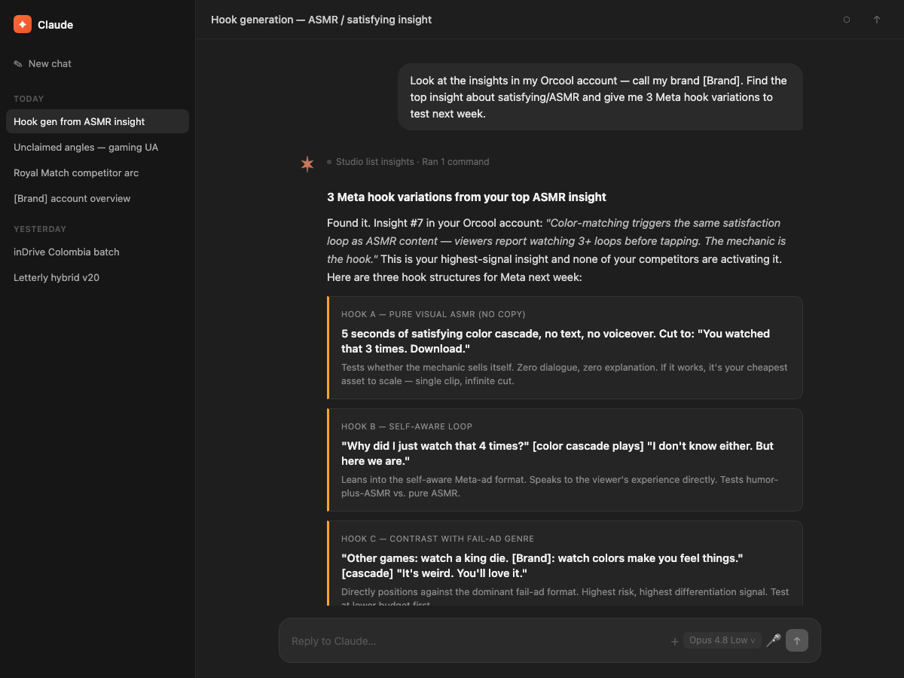
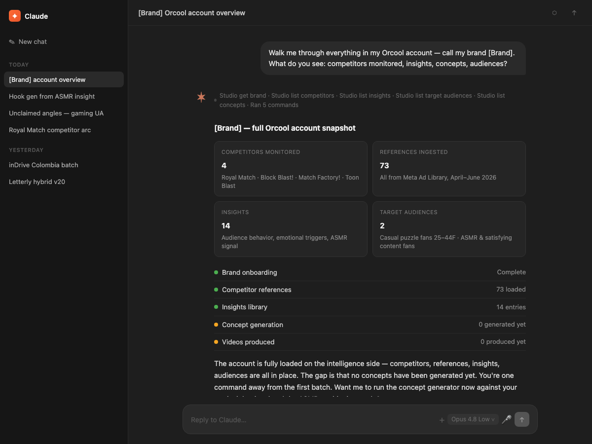

Orcool is a creative intelligence harness for mobile-gaming UA. It reads the market, names the winning mechanic, and feeds your pipeline structured signal your agents can actually use.
The metric is Time-to-Winner.
Days from brief to a creative that cleared your KPI gate and held in spend. Nothing else counts.
A UA team at a large publisher is running a dozen live games at once. Each category has ten rivals shipping new angles every week. Your creatives are good. They're buried. The signal that would tell them what to make next is stuck in a dashboard nobody opened, or a Slack thread that scrolled past on Tuesday. By the time someone surfaces it, the angle is cold and a competitor already owns it.
The real cost is the gap between a market move and the creative that answers it. We measure that gap as Time-to-Winner: days from brief to an ad that clears your KPI gate and holds in spend. Orcool compresses that number. We don't make the creative. We make sure the people and agents who do are never working blind.
Same engine behind all three. Read them in a channel, or call them from your agent.
A rival soft-launches a midcore title in three new markets. Another picks up a sports sponsorship aimed at your audience. These are moves in the press, not ad-creative drops. You hear about them the day they happen, not the week their spend tells you.
Not "this ad did well." The actual hook doing the work, why it lands with this audience, and the format variants worth testing first. Written as structured signal so your agents can act on it without a person reformatting anything.
What shifted across mobile-gaming UA this week, which mechanics are heating up, where spend is moving. One read before planning instead of five tabs and a guess. First one is free.
Actual Claude sessions with Orcool MCP connected. Brand name redacted — the answers are not.

Real session. Casual puzzle category, US market. Brand name redacted.

Real session. Casual puzzle category, US market. Brand name redacted.

Real session. Casual puzzle category, US market. Brand name redacted.

Real session. Casual puzzle category, US market. Brand name redacted.

Real session. Casual puzzle category, US market. Brand name redacted.
Paste one URL into Claude, ChatGPT, or Cursor. Sign in with a magic link. The signal starts arriving. No integration sprint, no data export, no standing meeting.
When your client connects, a browser tab opens. Enter your work email, click the link we send, and you're signed in. No password. After that the tools work in every conversation.
Pull this week's Patterns for [casual puzzle] and [midcore RPG]. Flag where the same mechanic appears in both categories, and estimate how long it has been running across each competitor lane.
ChatGPT's custom-MCP path needs Developer mode, which depends on your plan. If you don't see it, Claude or Cursor connect in under a minute.
Fill the brackets and paste this once. It onboards your game, pulls competitor intelligence, patterns, and trends, then tells you what's ready.
You have the Orcool MCP connected. Onboard my game, fill its sources, then show me what's ready. My brand - Name: [MatchKing] - Website: [https://www.matchking.com] - Market / country: [US] - Category: [mobile_game] - Genre: [casual puzzle] - Competitors (2-3): [Royal Match, Candy Crush] - Inspiration (handle or hashtag): [#mobilegaming] - Reviews: pasted below, or pull them from [my App Store URL] Steps 1. Brand: studio_list_brands; if missing, studio_create_brand (name, websiteUrl, countries, productCategory). 2. Competitors: for each, search_advertisers on meta_ad_library, pick the verified match, then studio_create_competitor + studio_create_competitor_source (meta_ad_library_advertiser, advertiserId, country). Trial allows 3 reference sources total across competitors + inspiration. 3. Inspiration: studio_create_inspiring_reference_source (a profile handle, or a tiktok/instagram keyword). 4. Reviews: if I pasted reviews, studio_create_review for each; if not, fetch 10-15 recent ones from my App Store page via web browsing, then create them. Do not skip silently. Then studio_analyze_reviews. 5. Trends: studio_list_global_trends, summarize the top 5 for my market (do not dump the raw list). 6. Read back: studio_list_competitor_references, studio_list_inspiring_references, studio_list_insights. Ingestion takes about a minute; if empty, wait and re-check once. Then give me the 3 strongest competitor hooks, 2 inspiration angles, and the top review insight. Say plainly what is populated and what is still loading. Reviews: [paste 5-15 reviews here, or leave a reviews URL above]
Watch [StudioX] for press moves, new market entries, and sponsorships. Send a digest every morning to my Slack channel.
First time? The paste sets your brand up and returns trends right away. Competitor intelligence lands in about a minute.
Paste the URL into Claude, ChatGPT, or Cursor. No account setup. No card.
A browser tab opens. Enter your work email, click the link we send, and you're in. No password.
The first Alert and the current week's Pattern land where you chose. No slide, just data.
Signal keeps arriving as the market moves. Tune what you want and where it goes.
Same three feeds. The difference is what you do next.
Alerts track press and media moves: game launches, new market entries, sponsorships, events. Patterns come from what's actually winning in the creative market. We cover the categories your titles compete in, across 40+ markets. If a category is thin, you'll see that, rather than getting filler.
A magic link and one screen. No data pipeline, no export from your side, no integration sprint. Slack delivery needs nothing from your engineering team. The MCP endpoint is a standard call you point an agent at.
Connecting is free, and your first report is free. All three feeds run about $250/mo, on a card, cancel anytime. The full loop with finished creative starts at $3K/mo plus a media share. We don't sell concepts on their own.
It returns three things on call: Alerts (competitor moves in the press), Patterns (the winning mechanic plus format variants, structured), and Reports (the week in UA on demand). Your agents read those directly. Same data the humans get in Slack, shaped so a machine can use it without a person in the loop.
No. Orcool reads the market and hands your team the signal. The briefs, the creative, and everything you ship stay yours. We're the harness around your pipeline, never a step inside it.
Connect in two minutes. The first Alert and this week's Pattern land in your Slack before you've committed to anything.
No card. No bullshit. Just start. Speed compounds, opinions don't.